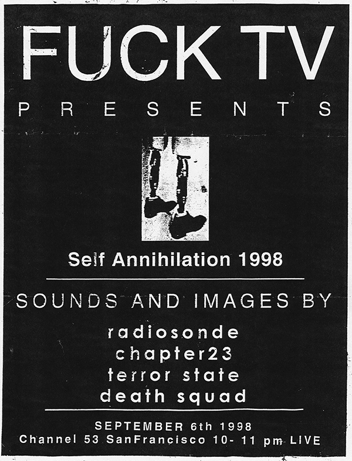

FUCK TV
3 DISC DVD SET OUT NOW
An experimental audio visual television excursion into raw manipulated media overload.

Original Flyers

EPISODES
1. Electricity (11/02/97)
2. Yule Bible (12/07/97)
3. Cults (01/04/98)
4.
Riots (03/04/98)
5.
Animals (04/06/98)
6.
Executions (05/03/98)
7. Static (06/07/98)
8.
Media (07/05/98)
9.
Haterella by GX Jupitter-Larsen (08/02/98)
10.
Self Annihilation Live - Radiosonde, Chapter23, Death Squad (09/06/98)
AN EXPERIMENTAL PUBLIC ACCESS MEDIA NOISE SHOW
After concluding the now-legendary public access TV series, The Pain Factory, Michael Nine embarked on a new and more subversive public access endeavor: a collaboration with Scott Arford called Fuck TV. Whereas The Pain Factory predominantly revolved around experimental music performances, Fuck TV was a comprehensive and experiential audio-visual presentation. Aired to a passive and unsuspecting audience on San Francisco’s public access channel from 1997 to 1998, each episode of Fuck TV was dedicated to a specific topic, combining video collage and cut-up techniques set to a harsh electronic soundtrack. The resultant overload of processed imagery and visceral sound was unlike anything presented on television before or since. This DVD set marks the first time that this show has been made available since its original airing.
3 DVD DISC SET- 10 EPISODES + 8 Page Booklet
Total Running Time 09:17:57
Available from
Neural Operations is SOLD OUT Influencing Machine Records is SOLD OUT
Contact Scott[at]7hz.org Copies Available